Lokma
Yemeğinin fotoğrafını çek, kalori ve makrolar anında hesaplansın. Türk mutfağını gerçekten tanıyan kalori sayacı.Snap your meal and get calories and macros instantly — a calorie tracker that actually knows Turkish food.
İstanbul · Oyunlar & UygulamalarIstanbul · Games & Apps
Merak et, oyna, keyfine bak. İstanbul’un sokak kedilerinden ilham alan, herkesin telefonunda yer açacağı tatlı oyunlar ve akıllı uygulamalar yapıyoruz.Curious games and clever apps inspired by the street cats of Istanbul — the kind of thing you keep on your home screen.
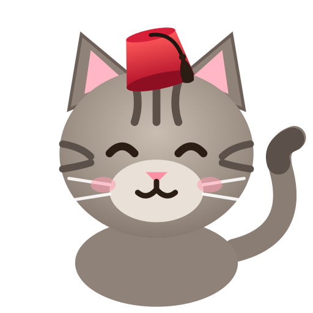
Tekir Games
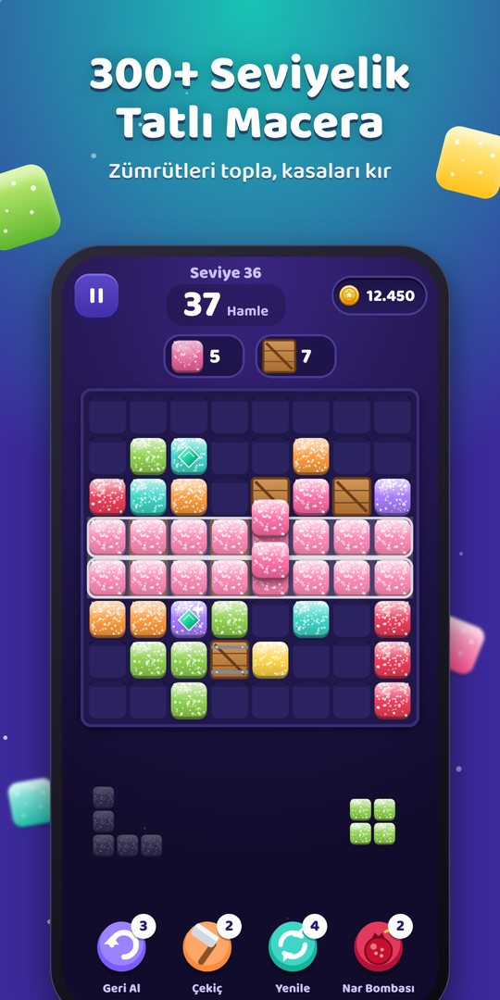
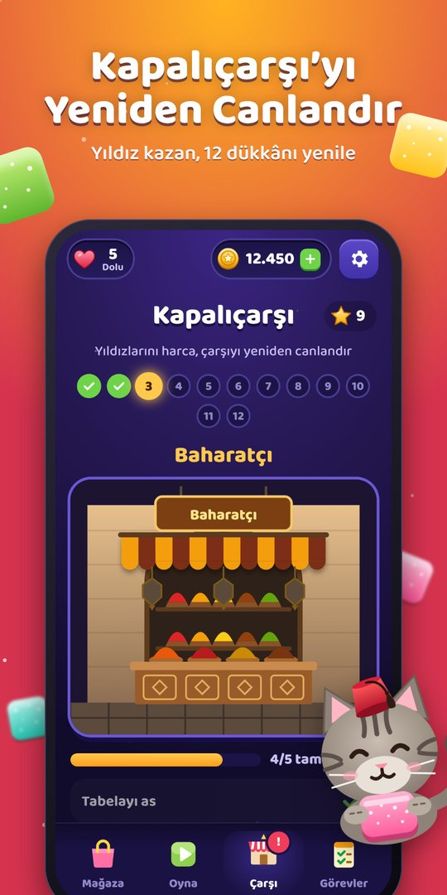
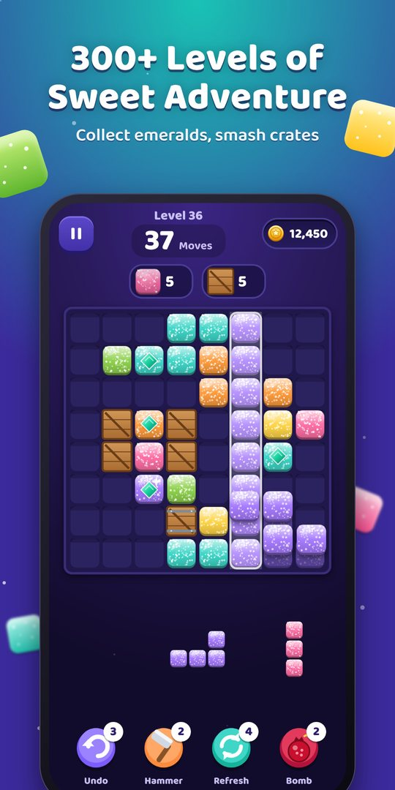
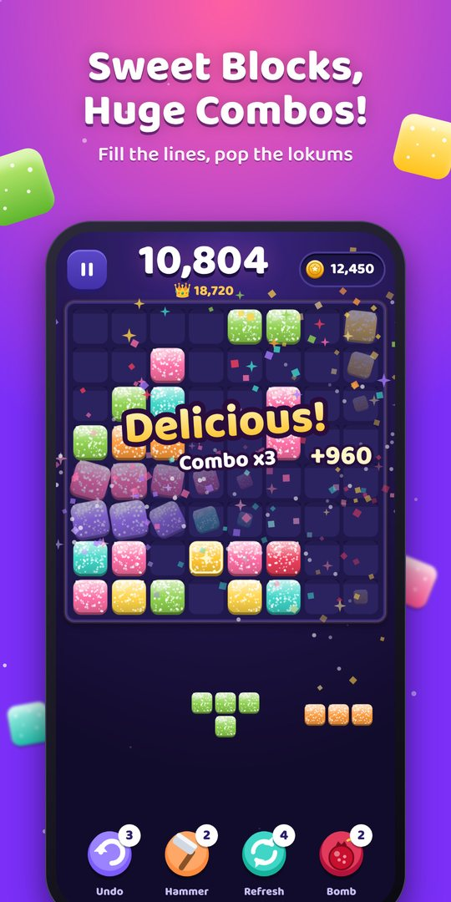
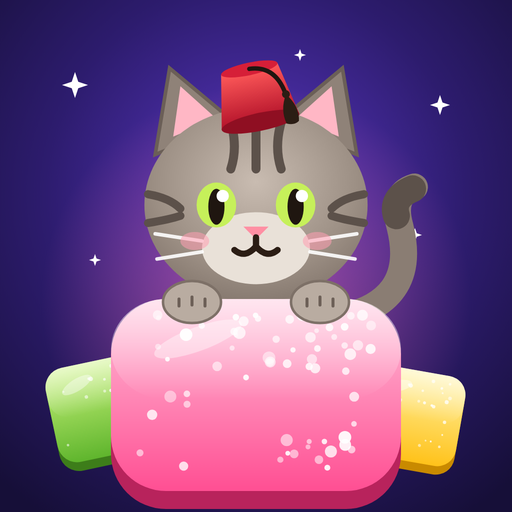
Pudra şekerli lokumları 8×8 tahtaya diz, satırları patlat, kombo üstüne kombo yap. 300+ seviyelik Yolculuk’ta zümrütleri topla, Tekir’le birlikte Kapalıçarşı’nın 12 dükkânını yeniden canlandır.Place sugar-dusted Turkish delight on an 8×8 board, blast rows and chain combos. Collect emeralds across 300+ levels and help Tekir restore 12 shops of the Grand Bazaar.
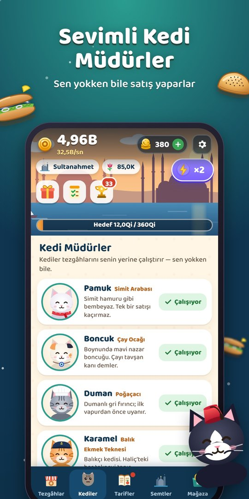
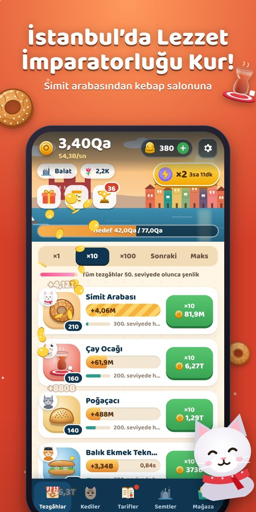
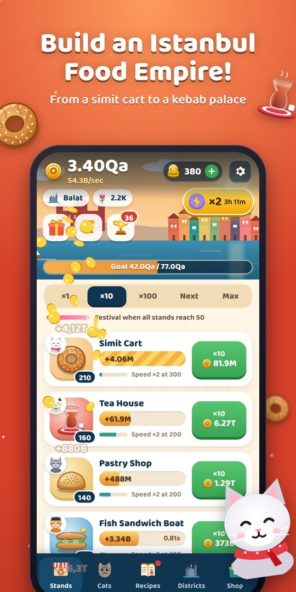
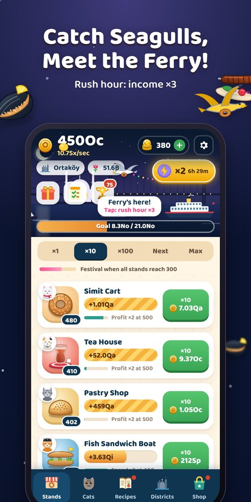
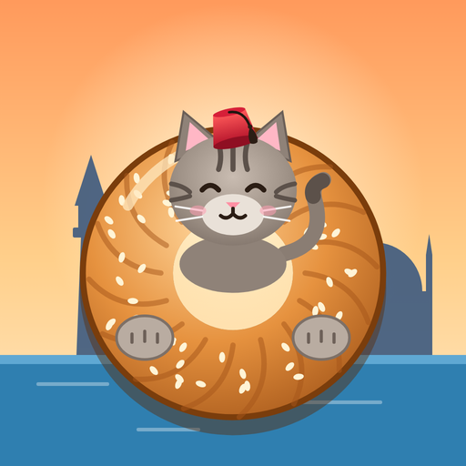
Karaköy iskelesinde tek bir simit arabasıyla başla. Çay ocağından kebap salonuna 10 sokak lezzeti aç, her tezgâhın başına sevimli bir kedi müdür koy ve Karaköy’den Adalar’a İstanbul’un lezzet imparatorluğunu kur. Sen yokken bile kazan.Start with a single simit cart on the Karaköy pier. Open 10 street-food stands from tea house to kebab palace, put an adorable cat manager in charge of each, and build an Istanbul food empire from Karaköy to the Princes’ Islands. Earn even while you’re away.
Tekir Labs
Yapay zekâyı günlük hayatın küçük işlerine taşıyoruz. Şu an atölyede olanlar:We bring AI to the small jobs of everyday life. Currently in the workshop:
Yemeğinin fotoğrafını çek, kalori ve makrolar anında hesaplansın. Türk mutfağını gerçekten tanıyan kalori sayacı.Snap your meal and get calories and macros instantly — a calorie tracker that actually knows Turkish food.
Fincanının fotoğrafını çek, falcı kedimiz telvedeki şekilleri yorumlasın. Eğlence amaçlı.Photograph your coffee cup and our fortune-teller cat reads the shapes in the grounds. For fun.
Sigarayı ya da vape’i bırakmak için kişisel koç: sayaç, sağlık zaman çizelgesi ve kriz anında nefes egzersizleri.A personal coach for quitting smoking or vaping: counters, a health timeline and breathing exercises for cravings.
HakkımızdaAbout
Oyuncuyu tutan şey karanlık desenler değil, gerçek eğlence ve adil ilerleme. Ödüllü reklamlar her zaman isteğe bağlı.Players stay for real fun and fair progress, not dark patterns. Rewarded ads are always optional.
Hesap açtırmıyoruz, oyun ilerlemesi cihazında kalıyor. KVKK ve GDPR’a uygun çalışıyoruz.No accounts required; your progress stays on your device. We follow KVKK and GDPR.
Çini, çarşı, çay, simit… Kendi kültürümüzü, dünyanın her yerinde sevilecek bir dille anlatıyoruz.Tiles, bazaars, tea, simit — we share our culture in a language the whole world enjoys.